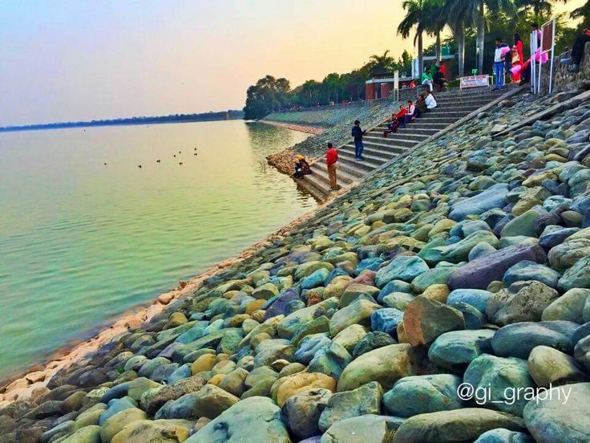

Chandigarh - a union territory is the first -planned city of India, which is known for its amazing architecture. In addition, what is special about Chandigarh is a unique amalgam of suave architecture and natural bliss. The capital of the states of Punjab and Haryana, Chandigarh is the modern India’s face and a respite for those looking forward to a break from hustle and bustle of everyday life, thereby highlighting the importance of Chandigarh tourism.  The beautiful city is dotted with greenery, rich culture, beautiful architecture which is clearly depicted from the tourist attractions. Nature lovers can head to Rose Garden, Rock Garden, Sukhna Lake, Shanti Kunj, Pinjore Garden, Terraced Garden, Botanical Garden, Bougainvillea Garden, Garden of Fragrance, Leisure Valley, Hibiscus Garden and more. Those who love to explore the art and architecture, Government Museum and Art Gallery is a must visit tourist attraction in Chandigarh. Tourists visiting Chandigarh with children can head to the International Dolls Museum and Children Traffic Park. In addition to this, Chandigarh is a place for wildlife enthusiasts where one can visit Sukhna Wildlife Sanctuary and Chhatbir zoo which is home to a large variety of birds, mammals and reptiles. Besides this, there are many other points of interest in Chandigarh where tourists can sit and relax admiring the collective efforts of both natural as well human to make Chandigarh one of the beautiful cities of India Dark Mode is OFF Darkmode LightMode
The beautiful city is dotted with greenery, rich culture, beautiful architecture which is clearly depicted from the tourist attractions. Nature lovers can head to Rose Garden, Rock Garden, Sukhna Lake, Shanti Kunj, Pinjore Garden, Terraced Garden, Botanical Garden, Bougainvillea Garden, Garden of Fragrance, Leisure Valley, Hibiscus Garden and more. Those who love to explore the art and architecture, Government Museum and Art Gallery is a must visit tourist attraction in Chandigarh. Tourists visiting Chandigarh with children can head to the International Dolls Museum and Children Traffic Park. In addition to this, Chandigarh is a place for wildlife enthusiasts where one can visit Sukhna Wildlife Sanctuary and Chhatbir zoo which is home to a large variety of birds, mammals and reptiles. Besides this, there are many other points of interest in Chandigarh where tourists can sit and relax admiring the collective efforts of both natural as well human to make Chandigarh one of the beautiful cities of India